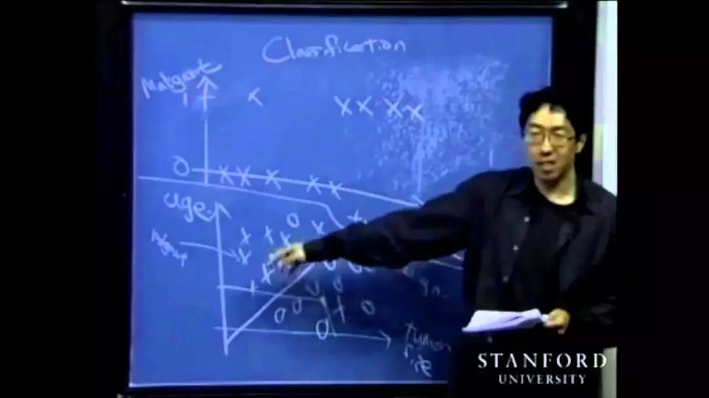

人工智能这个词近些年一直被大家反复提及。之所以其如此火热，是因为随着相关的技术条件成熟，这个技术在我们的产业中发挥了越来越大的作用。
这个大趋势的背后，不可避免会有相关从业者的作用。只有懂相关技术的人在每个行业中针对具体的情况去应用这些技术，才能使这些技术发挥越来越大的作用，改造这些行业，使之效率更高。我们通常会把这些人统称为人工智能从业者，或者数据科学从业者。
当然这个行业中的从业者会有不同的分工。Warald早年曾经写过一篇文章，分析过数据科学的几个不同的职业方向。
https://posts.careerengine.us/p/5907e7b54e71681080a78cff
这篇文章当年还在寻找方向的我指明了前进的道路。强烈建议对相关职业道路感兴趣的同学读一读。
当然今天这篇文章不是要分析这些职业。这篇文章将从我自身出发，谈谈机器学习工程师的学习，求职路径。
入行门槛
（这里指的是刚从学校毕业直接找这类工作的人群。有了工作经验，尤其是后端工程师的工作经验以后，其实会比刚从学校毕业更有优势。）
第一类人是各类PhD。一般为计算机PhD。也有统计，机器人，物理，数学，心理学，天文等在研究中会用到相关的机器学习模型的PhD。
第二类人是计算机或者统计的Master（物理，数学，心理学的master数量比较少，不太多见）。这类人一般本科是计算机，本科硕士期间会修3门左右的机器学习课程。
第三类人就是转行的，什么样出身的都有，一般是内部后端工程师转岗的居多。
近些年的趋势是竞争越来越激烈，越来越倾向于招第一类人，招少数优秀的第二类人（一般是通过先实习的渠道），招少数公司内部转岗的人。
计算机基础
作为一个机器学习工程师，其实本身应该是一个合格的计算机工程师。从公司的角度出发，这个岗位上一个人的计算机技能其实要比机器学习技能重要得多。一个人机器学习技能不太成熟，很多时候多问问同事就行了。很多时候“调包侠”虽然不那么光彩，还是可以完成工作的。
然而要是一个人的计算机技能不行的话，很多日常的工作是没有办法完成的。这是因为机器学习工程师的本职工作就是用代码去实现机器学习的算法，搭建机器学习所需的数据流。没有运用代码的技能的人，只能指挥别人去实现自己的想法。而这个有资格去指挥别人的岗位，门槛往往不是一般性的高。除了大公司里的研究部门，一般已经很少见到了。
这也就是为什么通常公司里的机器学习工程师都有着计算机的学位，而不是统计学位。当然统计学位的人不是没有，他们一般都会有自学计算机（或者上来Offer等课程）的算法，数据结构，系统设计这些计算机知识的经历。如果你也是统计学位想走这条道路的话，这将会是你不得不付出努力的一个方向。
机器学习基础
如果说计算机技能是一个机器学习工程师的基础技能，那机器学习的知识就决定了这个工程师在技术上能走多远（当然能不能升职更多看情商和Vision）。
如果想了解最新的研究进展，看懂每天出来的新paper都在讲什么，必然需要机器学习的基础扎实。一般来说新的想法都是建筑在老的模型思想之上的。
网上的很多机器学习课程则会略去那些当今不太常用的模型方法。比如说著名的Andrew Ng的机器学习Coursera课程，就会略去大量的数学证明（当然课程质量确实很好，他把很多数学模型背后的思想用人话解释了出来）。这样看似短期内掌握了很多东西，面试也非常有用。但是没有了数学基础的机器学习就成为了一门无法举一反三的孤立的知识体系，当有新的模型，新的方法出现的时候，你将无所适从。
在此强烈推荐Andrew Ng的另一门在Stanford教授的机器学习课程cs229（https://see.stanford.edu/course/cs229）。在这门课程中他把所有主要模型背后的数学都推导了一遍，非常有利于初学者建立起模型之间的数学联系。

Andrew Ng曾经超级青涩
机器学习专项知识
在机器学习的大方向上，也分好多小方向，比如计算机视觉，自然语言处理，推荐排序，强化学习等等。每一个小方向都有其特定的知识体系需要掌握和学习。
比如计算机视觉我比较推荐Stanford cs231n 2016年冬季版的课程（http://cs231n.stanford.edu/）。自然语言处理我听说Stanford cs224n很好。还有我最近在学的Berkeley cs294-112的课程是强化学习这个方向的经典课程（http://rail.eecs.berkeley.edu/deeprlcourse/）。
这些课程Youtube上都有视频，听说B站也有转载，要是能踏踏实实跟下来，做完作业，收获是非常大的。
当然随着深度学习的普遍应用，这几个小方向中模型的某些部分开始变得通用，因此这部分的知识开始变成了公共知识。不过我相信不管深度学习如何演变，提取输入数据的方法，应用模型输出的方法，以及模型的外部支持框架总会是有其小方向特点的。
cs231n winter课的主讲人，讲课非常清楚
项目经验
机器学习是一门实践为主，理论为辅的学科。很多时候一个方法可行并没有相关理论的支持，更多的是一种经验上的成功。所以一个人在这个方面的经验多少，常常决定了他的成功率有多高，工作效率有多快。
我个人的经验一是参加一些Kaggle的比赛，二是找一些开源的项目，尝试一下相关的算法，并且最好可以应用到自己的项目里去。这样子在面试的时候会很有东西聊。
在招聘的时候，由于很难根据计算机基础和机器学习基础来筛选简历，所以一般简历的筛选会非常强调工作经验或者项目经验。所以要是这方面看上去太弱，一般面试会很少。
总结
今天这篇虽然已经说了不少了，还是觉得好多地方没有讲清楚，太过于泛泛而谈了。不过细细想来，职业发展本来就是见仁见智，而且不同人都有不同的最佳路径。本来路都是自己走出来的，所以作为参考的路也不用标注得过于详尽，这样一篇也许已经足够了。